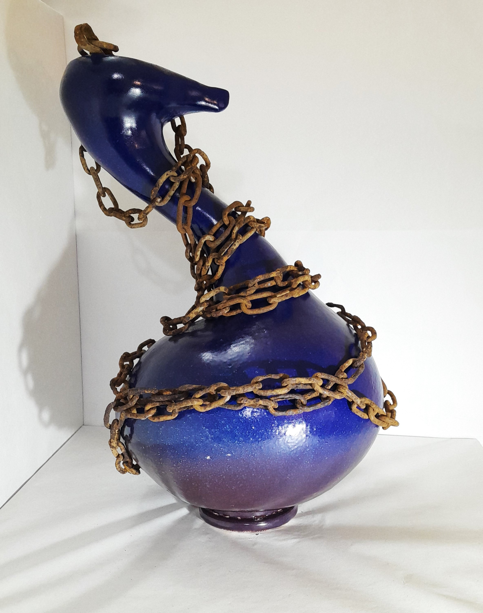
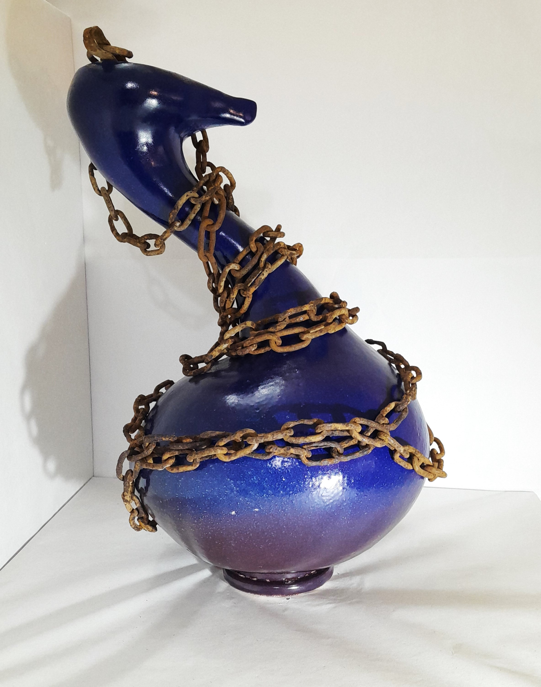

ARTE CON CERAMICA
La cerámica como medio de expresión es lo que descubrí hace unos años y lo quiero compartir con todos. En este caso, voy a mostrar parte del trabajo interior que vengo haciendo con respecto a los miedos, desde niña fue una constante en mi vida, así que cuando descubrí la cerámica decido con estas dos cosas hacer algo. Mostrar ese mundo interior a través de la cerámica, pero de una manera diferente, con jarrones. Cada Jarron representa algo para mí y espero que también para el espectador.
Jarron Libertad


En la primera fotografía que se puede ver, pertenece al primer bosquejo, la primera imagen que encontré del miedo a la libertad, después hago una maqueta, de un tamaño no más de 20cm de altura, es la segunda fotografía, en este momento pruebo colores, texturas, etc. Luego, construyo la cerámica final, que es la tercera fotografía, de un tamaño de 50 cms aproximadamente y, por último, termino con el dibujo final, la imagen del miedo a la libertad.
Jarron Decision

La primera fotografía es el bosquejo del jarrón Decisión. Las primeras ideas, no tiene más de 18 cm de altura. Luego la fotografía de la maqueta, que tiene más o menos la misma altura del bosquejo, acá momento de pruebas de color y descubrí las vetas que se pueden ver en el jarrón decision son azules, las cuales se confunden con venas y en mas de una oportunidad me dicen que se parece a un corazón. La fotografía siguiente ya es el jarrón terminado, distinto, es lo maravilloso de trabajar de esta manera, ya este tiene un tamaño de 50 cms y por último la fotografía final , el dibujo final , la imagen del miedo a tomar una decisión.
Jarron Prisionera
 


La primera fotografía es el bosquejo. En este caso era muy importante la forma y la textura, es la primera idea, no tiene más de 18 cm. La siguiente fotografía es la maqueta, también pequeña, pero en este caso debía tener un esmalte muy suave al tacto. Fue una etapa importante elegir el color. Luego, la fotografía siguiente es el jarrón final con su cadena ajustándose. Y por último, la fotografía del dibujo, este jarrón para mí representa el miedo a quedar atrapada.